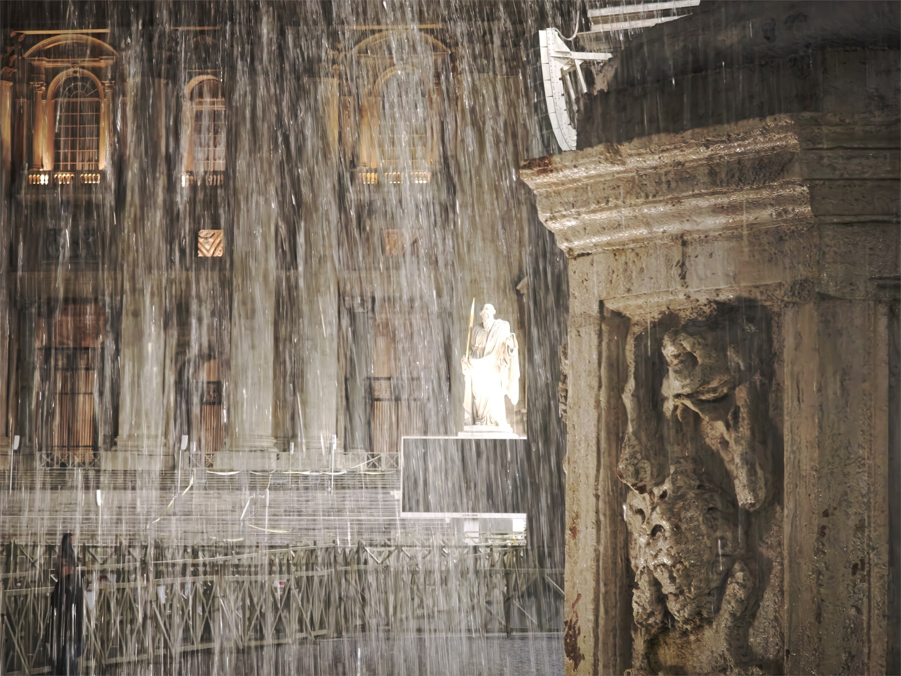
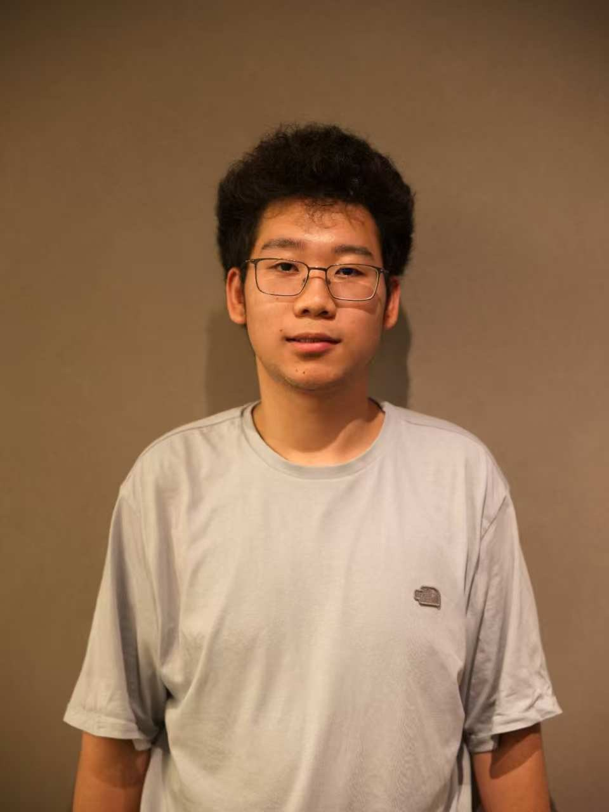
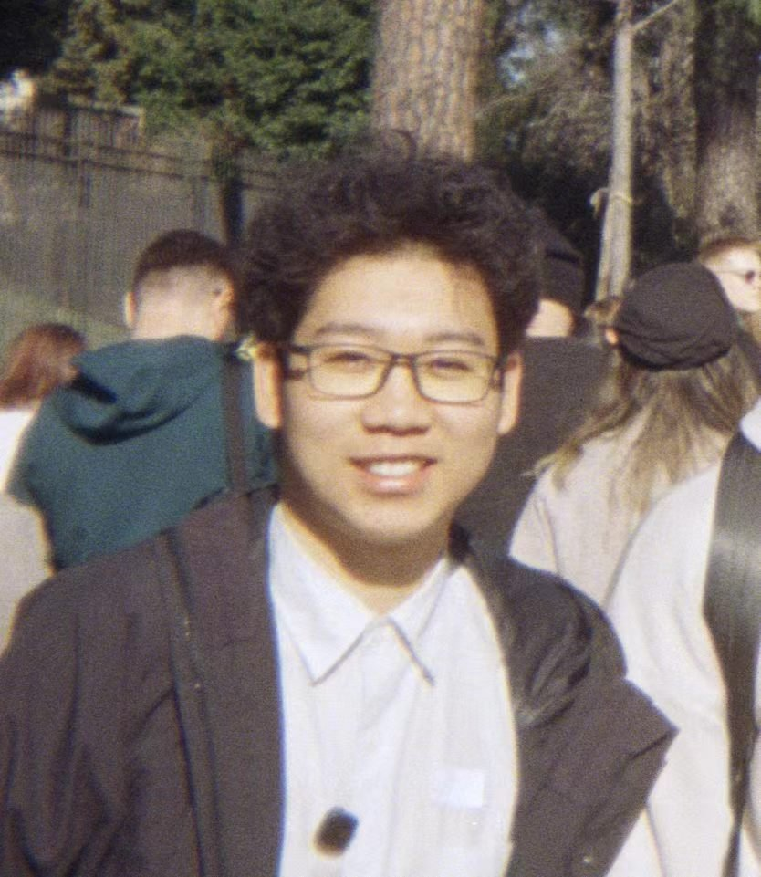

2024.06 — NOW
伴行青年
公益宣传与内容支持
完成十余次海报制作与修改，并参与播客音频编辑和课程协作。

PERSONAL PHOTOGRAPHY · LIGHT / STRUCTURE / MEMORY
SCROLL TO EXPLORE01 / ABOUT


我习惯先理解人与场景，再把复杂信息整理成清晰的空间关系、视觉叙事与可体验的表达。
目前就读于沈阳航空航天大学环境设计专业。我的实践横跨空间更新、展陈、建模、摄影、影音内容与网页原型，希望在更大的设计团队中继续学习如何把概念推进为完整体验。
EXPERIENCE / SELECTED
2024.06 — NOW
公益宣传与内容支持
完成十余次海报制作与修改，并参与播客音频编辑和课程协作。
2 YEARS+
干事
围绕运动会、演讲等校园活动进行摄影与视频记录。
2025.09 — 11
门店兼职
参与衣物清点与整理，支持门店日常运营。
02 / SELECTED WORK
从空间调研到模型、图像与网页原型，以下项目记录了我如何组织问题、形成概念并根据反馈继续调整。
03 / APPROACH
从人的动线、行为和情绪出发，把功能关系转译为空间体验。
用构图、摄影和版式建立信息层级，让方案更容易被看见和理解。
结合建模、AI图像和网页，把静态概念延伸为可浏览的体验原型。
愿意把第一版放到真实反馈中检验，再调整结构、模型与表达。
TOOLS & WORKING MEDIA